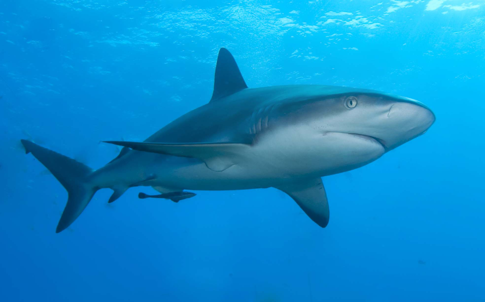
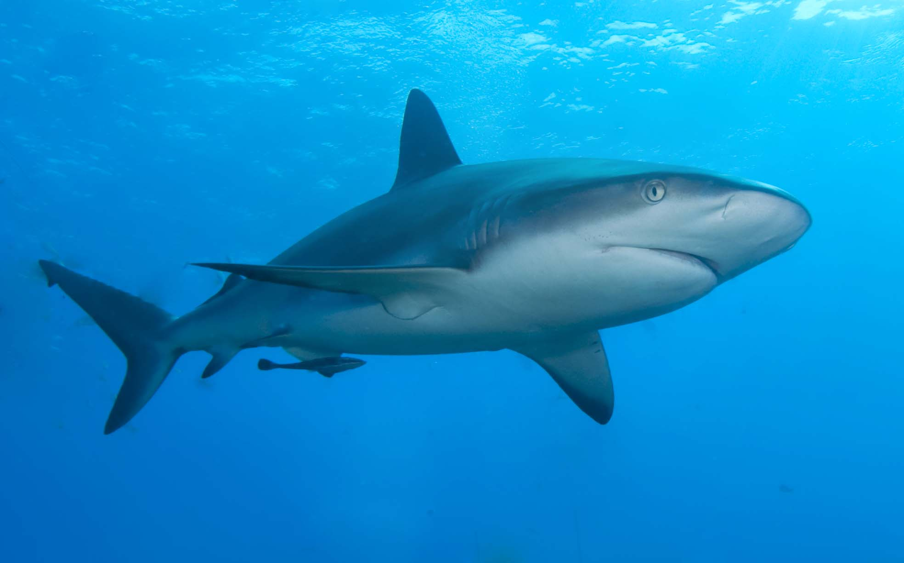

comenzaremos con RECORTE, mecanica para recortar la imagen, eso nomas.
no hay mucha diferencia hahaha

mejor mecanica no puede haber, el retoque se basa en corregir las imperfecciones de una imagen, ya sean manchas o demas. a continuacion unos ejemplos


asi se cambia de equipo chicos, con esta mecanica podemos cambiar el tono del color de cualquier cosa sin tener muchas imperfecciones


probablemente la mejor mecanica de photopea, con esto podemos recortar manualmente un objeto o persona, aqui unos ejemplos (en caso de utilizar esta mecanica tenga en cuenta que tiene que ser un recorte perfecto, en caso contrario utilice pluma encurvada)

 
 
gracias por visitar esta pagina, normalmente esto lo tendria que ver "404" o "ilusionadores digitales", lamentamos si hay poca informacion o no se entiende nada de como hacer estas cosas.